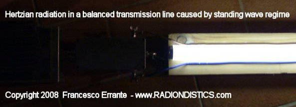
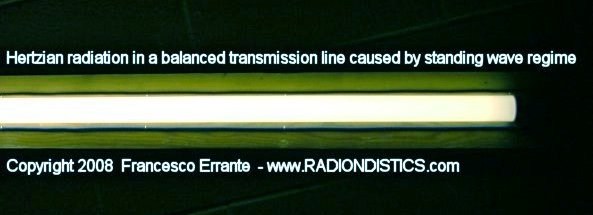

|
Planning a trip to Sicily? Then,
make sure you won't be feeding the Mafia!

|
|
|
If you have a scientific interest in the physics of the
radio, you should browse this site as an e-book!
|
|
|
|
Errante's apparatus
for the physics of the balanced transmission lines for radio frequency
signals.
Foreword: although
when referring to balanced transmission lines our thougth goes to a
pair of identical electrical conductors beign parallel to each other,
commonly known as a "bifilar line" , it must be said that
balanced transmission lines can also be formed by any even number of
conductors carrying the same number of currents in a multi-phases
arrangement.
(Poly-phase currents arrangement were first introduced in the electrical engineering by Nikola Tesla)
Balanced transmission lines can be either symmetric or
asymmetric.
Francesco
Errante
Definition of
a balanced transmission line: � "a transmission line for
electric signals is electrically balanced when it does not intervene to
modify the phase difference between the currents traveling on it and
each and every of its conductors transfer the same amount of energy per
time unit (power)."
Francesco
Errante
Definition of a
symmetric balanced transmission line: � "an
electrically balanced transmission line for electric signals is
symmetric when it is formed by electrical conductors which exhibit the
same impedance value with respect to the physical ground or to a
virtual ground node."
Francesco
Errante
Definition of an
asymmetric balanced transmission line: "an
electrically balanced transmission line for electric signals is
asymmetric when it is formed by electrical conductors which DO NOT
exhibit the same impedance value with respect to the physical ground or
to a virtual ground node."
Francesco
Errante
Ist Errante's
principle for the transmission lines: � "a transmission line
for radioelectric signals, being it balanced or unbalanced, when in a
progressive wave regime, is always aperiodic."
Francesco
Errante
IInd Errante's
principle for the transmission lines: "any transmission line
for radioelectric signals, may be converted from being a balanced one
to an unbalanced one and viceversa, an infinite number of
times."
Francesco
Errante
IIIrd Errante's
principle for the transmission lines: "it is always possible to
generate a virtual ground node anywhere along a transmission line for
radioelectric signals ."
Francesco
Errante
IInd Errante's
law applied to the transmission lines "a transmission line for
radioelectric signals, being it balanced or unbalanced, when in a
progressive wave regime, does not originate hertzian
radiation."
Francesco
Errante
|
|
�
The apparatus and the measurement method presented
hereby permit to analyze the electric behaviour of balanced transmission lines for
radio frequency electric segnals in a progressive wave regime and in particular
have the purpose of:
a) demonstrating that the balanced transmission lines are aperiodic;
b) demonstrating that the balanced transmission lines can be converted into
unbalanced ones and viceversa, an infinite number of times;
c) demonstrating that it is always possible to generate a virtual ground node at
any point of any transmission line;
d) demonstrating that the balanced transmission lines, when perfectly matched, both
to the signal source and to the load, DO NOT originate hertzian radiation.
�IInd Errante's
law.
�
�
The balanced transmission lines for radio
frequency electric signals are generally formed omogeneously by two identical
unshielded electrical conductors running parallel to each other but can also be
formed by a larger number of conductors, being them open wires or shielded cables.
�
An example of an electrically balanced line employing a
pair of individually shielded coaxial cables(7) - Copyright © 1985- Francesco Errante
�
Errante's ONE-WIRE UNBALANCED RF TRANSMISSION LINE,
employing Errante's CAPACITIVE RF EARTH GROUNDING SYSTEM - Copyright © 2009 -
Francesco Errante
�
A transmission line for electric signals is electrically
balanced when it does not intervene to modify the phase difference between the
currents traveling on it.
In order for that to be possible it is necessary that all the line's conductors be
identical to each other and that the line it-self be perfectly matched both on its
input and output ports. That means that the characteristic impedance of the line
must be equal to the impedance of the radio frequency signal source and to the
impedance of the load, being it reactive or non-inductive. A correctly matched
transmission line, when being runned, is in a progressive wave
regime and the energy transfer to the load is maximum with no hertzian
radiation being originated.
Wherever the transmission line runs at a close proximity of the ground, it is also
necessary for its conductors to be equally spaced away from it, in order to keep
their capacitive coupling constant to the ground it-self.
If the interaxial distance between the line's conductors is kept constant,
decreasing the line distance from the ground, the line's own characteristic
impedance decreases accordingly. This is due to the line's conductors capacitive
coupling to the ground, this capacitance adds to the the parasitic electrical
capacitance between the line's conductors, which is always present.
Balanced transmission lines, if properly isolated, can run along the ground surface
or can even be buried underground. In those cases, the close capacitive coupling
between the line's conductors and the ground makes the parasitic electrical
capacitance between the line's conductors neglectable, to the point that they no
longer need to run parallel to each other. However, they still need to be identical
to each other, unless they are ment to form an asymmetric balanced
line.
Electrically balanced transmission lines can also be geometrically and electrically
asymmetric.
An asymmetric balanced line is so defined: "a balanced transmission
line for electric signals is asymmetric when it does not intervene to modify the
phase difference between the currents traveling on it and it is formed by
electrical conductors which do not exhibit the same impedance value with respect to
the physical ground or to a virtual groung node. Copyright 2008 Francesco
Errante.
Close coupling between the line's conductors and the ground, however, confines the
usage of lines running along the ground or underground to low and medium power
systems, where voltages involved do not require a great deal of insulation.
With the advancement of the technology for radioelectric constuctions, the coaxial
cable unbalanced lines have, progressively, taken the place of the balanced
transmission lines in the majority of the applications, except for the very high
power ones.
Right from the outset of radio engineering, the most recurrent case of usage of a
balanced transmission line is represented by its employment in the feeding of the
half a wave length folded dipole antenna. This because, a 300 Ohm balanced
transmission line adds ease of construction to the folded dipole's useful
properties. (The same can be said for the multiple-wire folded dipoles that
have characteristic impedance multiple of the 300 Ohm)
Rough observations made without any scientific rigor and the fact that it is much
too easy to feed an half a wave length folded dipole with a a stretch of a 300 Ohm
balanced transmission line has led everyone, untill now, to erroneously desuming
and/or accepting that balanced transmission lines were them-selves resonant and,
therefore, that it was necessary to neutralize their effects by lengthening or
shortening them. This desumption is false! Ernst Lecher's experiment
erroneous interpretation has done the rest in spreading this misconseption.
Lecher's line, infact, shows the electric behaviour of a two-wire line in a
standing wave regime and its employment is, instead, of no use in measuring
electric wavelengths if the line is in a progressive wave regime (VSWR = 1:1).
The instrumental illusion that balanced lines be resonant is given by the fact
that, when a folded dipole is directly fed by a two-wire line, there is no clear
cut border between the dipole it-self and the stretch of the bifilar line,
therefore, the electric signals will travel on a path which varies with the
transmission line length, with the result that the point of resonance of the whole
system will move ciclically.
The truth is that, if in a system being formed by a balanced signal source,
a balanced line and a radiator, the reactive load gets substituted by a
non-inductive load of equal impedance (dummy load) or by a perfectly matched
reactive load, the illusion that the balanced line be resonant disappears and the
system returns to showing it-self as being aperiodic, as demonstrated in the
experimental verifications pictured below:
A step-by-step sequence of all the measurements taken, along with
their results is shown here below:
These measurements, with the proper equipment, can be carried out in three
different ways:
1) by keeping constant the test signal wavelength while varying the physical length
of the balanced line;
2) by keeping constant the physical length of the balanced line while varying the
test signal wavelength;
3) by systematically varying both the physical length of the balanced line and the
test signal wavelength.
The second method is a great deal more convenient and faster than the others, so
that, a 300 Ohm balanced line of a fixed physical length has been used and
reflected energy measurements have been taken while varying the test signal
wavelength.
Moreover, it should be noted that these measurements can be carried out on any
spectrum of radio frequencies, but it is most convenient to perform them on the
shortwaves spectrum as they give, amongst other benefits, a larger wavelength
excursion for the same frequency span. All the measurements results,
therefore, can be extended to the whole spectrum of the radio waves.
NB: all the devices here employed for the obtainement of virtual ground nodes
provide a clear cut border for the RF signals between lines and radiators as well
as lines and lines, while always offering a total galvanic continuity among all the
circuits connected to them, ensuring a solid common ground path, which can, if
necessary, connected to the physical ground. See also: A virtual
ground node generator for unbalanced lines
|
Experimental verification of the balanced
lines aperiodic behaviour, when in a progressive wave regime
PRELIMINARY OPERATION: the balanced-to-balanced
measurement network is tested for frequency response flatness within the test
spectrum.
|

|
|
From left to the right: 50 Ohm co-axial TX line - S.W.R.
probe - 50/300 Ohm BalUn - short stretch of a symmetric bifilar transmission
line - 300/50 Ohm BalUn - 50 Ohm dummy load.
Test Freq.: from 1,8 to 30 MHz in 100 KHz steps
RF power : 1 KW cw
Measured S.W.R.: � 1:1 � over the whole spectrum
Result: OK! The network exhibits a flat response over the whole test frequency
spectrum.
�
|
|
Network analysis of a 300 Ohm balanced line, fed by
a 300 Ohm balanced signal source, terminated on a 300 Ohm dummy
load.
|

|
|
From left to the right: 50/300 Ohm BalUn - a random (4 m
ca.) stretch of a 300 Ohm symmetric bifilar transmission line - a 300 Ohm dummy
load.
Test Freq.: from 1,8 to 30 MHz in 100 KHz steps
RF power : 1 KW cw
Measured S.W.R.: � 1:1 � over the whole spectrum
Result: the line shows an aperiodic behaviour over the whole test frequency
spectrum. The line aperiodic behaviour is VERIFIED.
N.B. All the measurements have been repeated with the line being held up
in the air.
�
|
|
The line shows the same aperiodic behaviour as in the
previous test, even if it is terminated on a non-radiating reactive load
(Errante's BalUn and a dummy load) as shown below:
|
|
Network analysis of a 300 Ohm balanced line, fed by a
300 Ohm balanced signal source, terminated on a 300/50 Ohm BalUn and a dummy
load.
|

|
|
From left to the right: 50 Ohm co-axial TX line - S.W.R.
probe - 50/300 Ohm BalUn - a random (4 m ca.) stretch of a 300 Ohm symmetric
bifilar transmission line - 300/50 Ohm BalUn - 50 Ohm dummy load.
Test Freq.: from 1,8 to 30 MHz in 100 KHz steps
RF power : 1 KW cw
Measured S.W.R.: � 1:1 � over the whole spectrum
Result: the line shows an aperiodic behaviour over the whole test frequency
spectrum. The line aperiodic behaviour is VERIFIED.
N.B. All the measurements have been repeated with the line being held up
in the air.
�
|
|
The line, again, shows the same aperiodic behaviour as in
the previous tests, even if it is terminated on a dummy load through a reactive
RF network as shown below:
|
|
Network analysis of a 300 Ohm balanced line
de-coupled from a non-reactive non-radiating load (300 Ohm dummy load) by means
of a 300/300 Ohm Errante's
balanced virtual ground node generator.
|

|
|
From left to the right: 50/300 Ohm BalUn - a random (4 m
ca.) stretch of a 300 Ohm symmetric bifilar transmission line - Errante's
300/300 Ohm B.V.G.N.G - 300 Ohm dummy load.
Test Freq.: from 1,8 to 30 MHz in 100 KHz steps
RF power : 1 KW cw
Measured S.W.R.: � 1:1 � over the whole spectrum
Result: the line shows an aperiodic behaviour over the whole test frequency
spectrum. The line aperiodic behaviour is VERIFIED.
N.B. All the measurements have been repeated with the line being held up
in the air.
�
|
|
Finally, by employing a virtual ground node generator for electrically balanced
systems, it has been dimostrated that balanced lines, if properly decoupled
from the radiators, always exhibit an aperiodic behaviour, as shown
hereafter:
|

|
|
Network analysis of a 300 Ohm balanced line
de-coupled from a reactive and radiating load (300 Ohm folded dipole) by means
of a 300/300 Ohm Errante's
balanced virtual ground node generator.
Ist test:
Purpose: finding the test dipole natural resonance
Conditions: test dipole fed through a 50/300 Ohm virtual ground BalUn.
Test frequency: test dipole center frequency - MHz 22,9
RF Power: 1 KW cw
S.W.R.: � 1:1 � @ MHz 22,9
Result: the test dipole center frequency found to be MHz
22,9
IInd test:
Purpose: finding the new test dipole center frequency once its feeding system
changed
Conditions: test dipole fed directly by a stretch of a 300 Ohm balanced
transmission line
Test frequency: NEW test dipole center frequency - MHz
23,5
RF power: 1 KW cw
S.W.R.: 1:1 � @ MHz 23,5
Result: the test dipole center frequency has been found to have shifted
to MHz 23,5
IIIrd test:
Purpose: finding the new test dipole center frequency once it has been
de-coupled from its balanced transmission line
Conditions: test dipole is de-coupled from its 300 Ohm balanced transmission
line through a 300/300 Ohm balanced virtual ground node generator
Test frequency: test dipole center frequency found to be back on MHz
22,9
RF power: 1 KW cw
S.W.R.: � 1:1 � @ MHz 22,9
Result:
1) test dipole center frequency has been restored to its natural resonance
value.
2) it has been verified that the balanced transmission line exhibits an
aperiodic behaviour.
�
|
�
|
Experimental verification of hertzian
radiation ABSENCE on a balanced transmission line in a progressive wave
regime.
IInd Errante's law
�
A perfectly adapted balanced transmission line being
runned with 1 KW RF has been tested for hertzian radiation emission by means of
radioluminescence.
It has been observed and at the same time demostrated the absence of hertzian
radiation emission on a transmission line while in a progressive wave
regime.
�
|
|
A properly adapted 300 Ohm balanced transmission
line terminated on a reactive but non-radiating load undergoing a radiation
test by means of a radiofluorescent detector.
|

|

|
|
From left to the right: a 50 Ohm dummy load - 50/300 Ohm
BalUn - a random stretch of a 300 Ohm symmetric bifilar transmission line,
about 4 m. long
Test frequency: from 1,8 to 30 MHz in 100 KHz steps
RF power: 1 KW cw
Measured S.W.R.: � 1:1 � over the whole spectrum
Result: the line does NOT radiate.
�
|
|
A properly adapted 300 Ohm balanced transmission
line terminated on a 1/2 wavelenght folded dipole, through a balanced virtual ground node
generator , undergoing a radioscopic detection.
Measurements performed both on low and high RF power (Freq. 25,5 MHz - 1 KW
cw).
|

|

|

|
�
|
Hertzian radiation emission by a balanced
transmission line, intentionally placed on a standing wave regime.
A standing wave regime (S.W.R. 1:1,7) has been
imposed on the transmission line previously used, by substituting the 50/300
Ohm load balun with a 50/150 Ohm one.
It has been observed and at the same time demostrated the PRESENCE of hertzian
radiation emission on a transmission line while in a standing wave
regime.
|

|
|
From left to the right: a 50 Ohm dummy load - 50/300 Ohm
BalUn - a random stretch of a 300 Ohm symmetric bifilar transmission line,
about 4 m. long
Test frequency: from 1,8 to 30 MHz in 100 KHz steps
RF power: 1 KW cw
Measured S.W.R.: � 1:1 � over the whole spectrum
Result: the line RADIATES.
|

|
|
Another view of a stretch of the bifilar line in a
standing wave regime.
|
�
�
�
|
An interactive impedance mismatch spectral
simulation
by

General Instructions
This spectral simulation is an interactive Java applet. You
can change parameters by clicking on the vertical arrow keys. The five control
buttons at the lower right are used to start (triangle) and pause (square) the
simulation, to skip forward or back one section at a time (double triangles),
and to change speed (+ and -).
After the simulation is complete, the start button takes you back to the
beginning of the simulation. You may experience a delay at this point.
Wave Propagation along a Transmission Line
When a sine wave from an RF signal generator is placed on a transmission line,
the signal propagates toward the load. This signal, shown here in yellow,
appears as a set of rotating vectors, one at each point on the transmission
line.
In our example, the transmission line has a characteristic impedance of 50
ohms. If we choose a load of 50 ohms, then the amplitude of the signal will not
vary with position along the line. Only the phase will vary along the line, as
shown by the rotating vectors in yellow.
If the load impedance does not perfectly match the characteristic impedance of
the line, there will be a reflected signal that propagates toward the source.
At any point along the transmission line, that signal also appears to be a
constant voltage whose phase is dependent upon physical position along the
line.
The voltage seen at one particular point on the line will be the vector sum of
the transmitted and reflected sinusoids. We can demonstrate this by looking at
two examples.
Example 1: Perfect Match: 50 Ohms
Set the terminating resistor to 50 ohms by using the "down arrow" dialog box.
Notice there is no reflection. We have a perfect match. Each rotating vector
has a normalized amplitude of 1. If we were to observe the waveform at any
point with a perfect measuring instrument, we would see equal sine wave
amplitudes anywhere along the transmission line. The signal amplitudes are
indicated by the green line.
Example 2: Mismatched Load: 200 Ohms
Now let's intentionally create a mismatched load. Set the terminating resistor
to 200 ohms by using the down arrow. Hit the PLAY button and notice the change
in the reflected waveform. If it were possible to measure just the reflected
wave, we would see that its amplitude does not vary with position along the
line. The only difference between the reflected (blue) signal, say at point
"z6" and point "z4", is the phase.
But the amplitude of the resultant waveform, indicated by the standing wave
(green), is not constant along the entire line because the transmitted and
reflected signals (yellow and blue) combine. Since the phase between the
transmitted and reflected signals varies with position along the line, the
vector sums will be different, creating what's called a "standing wave".
With the load impedance at 200 ohms, a measuring device placed at point z6
would show a sine wave of constant amplitude. The sine wave at point z4 would
also be of constant amplitude, but its amplitude would differ from that of the
signal at point z6. And the two would be out of phase with each other. Again,
the difference is shown by the green line, which indicates the amplitude at
that point on the transmission line.
The impedance along the line also changes, as shown by the points labeled z1
through z7.
VSWR
The VSWR, or Voltage Standing Wave Ratio, is the ratio of
the highest amplitude signal to the lowest amplitude signal, as measured along
the transmission line. A "perfect" VSWR is 1.
© Agilent 1997-
|
�
|
A transmission line
calculator

|
�
�

For pricing and delivery time,
please, contact us.
RADIONDISTICS' products carry an
unconditional lifetime guarantee.
|
|
|
�
|
�
All the concepts, methods, designs and devices presented on this
web site
are the original novelty works of FRANCESCO ERRANTE.
Patents & Copyright © 1985- of FRANCESCO ERRANTE.
Material is governed by the Copyright, Designs and Patent Act.
No reproduction, in whole or in part, without written permission.
Copies of these documents made by electronic or mechanical means, including information storage and retrieval systems, may only be employed for personal use.
All rights reserved.

|
All rights reserved. Copyright © 1985- Francesco Errante
www.Radiondistics.com - Tel.(+39) 339.180.1313
|
|